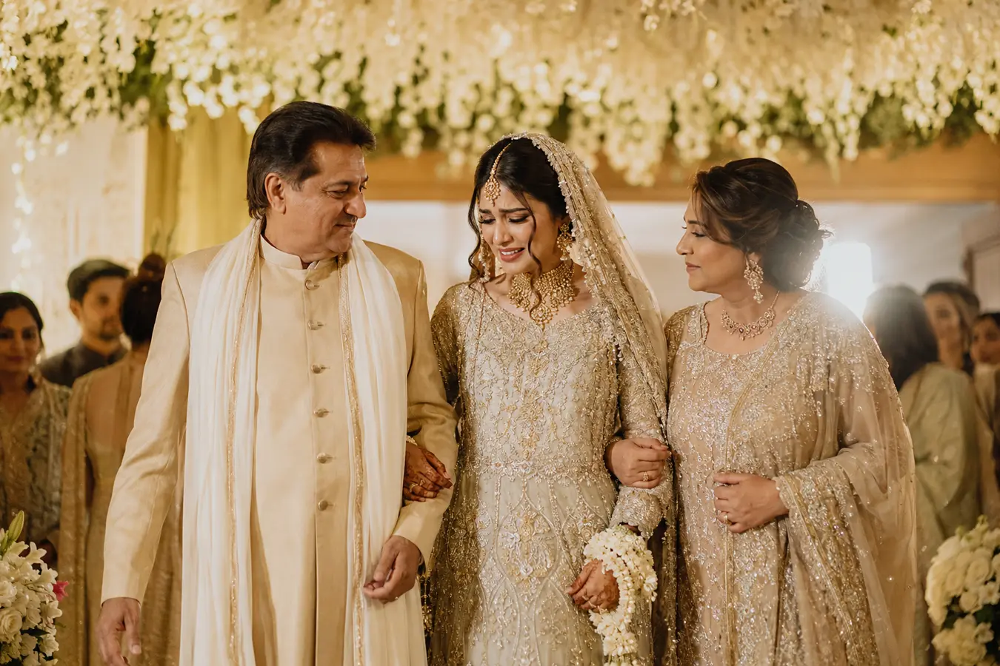
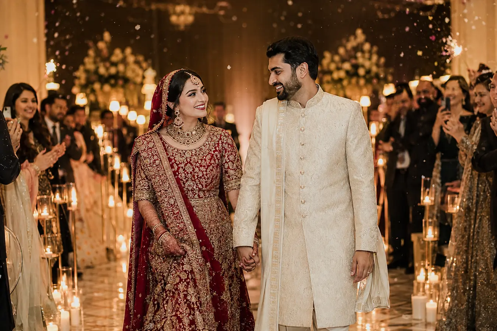

01
Stages & Backdrops
The place where eyes meet, vows are witnessed and the photographs you keep forever are made.
Wedding décor & event styling · Cardiff
Elegant, culturally inspired celebrations created with detail, warmth and a touch of luxury.
Designed around your story
A wedding is more than one beautiful day. It is family, tradition, anticipation and memories coming together in one room. We design that room so the moment you walk in, it already feels like your story.
What we create
The place where eyes meet, vows are witnessed and the photographs you keep forever are made.
Meaningful ceremony spaces that honour your traditions while feeling unmistakably personal.
Joyful colour, texture and energy for the celebrations where families laugh, dance and come together.
Thoughtful florals, candlelight and details that make every guest feel part of something special.
Thoughtful details. Seamless styling.
We listen to what matters to you, shape every detail with care and create the setting—so you can be fully present for the people you love.
More than a beautiful room
The music begins. Your family looks towards the door. For a few seconds, the planning disappears and everyone you love is simply there with you. We create the setting around that moment—beautiful enough to take your breath away, warm enough to feel like home.

A quiet glance, a proud smile, a hand held a little tighter—some entrances carry a lifetime of love.

The room rises, the lights glow and your next chapter begins in front of everyone who matters.
Your décor is not the whole story. It is the stage on which your story is felt.
Tell us about your moment ↗Selected celebrations
Discover our wedding stages, floral styling, tablescapes and celebration décor.
Culture meets contemporary design
We understand the details that make South Asian and multicultural celebrations special. Our styling can be tailored for Pakistani, Indian, Bangladeshi, Arab and wider multicultural weddings—always shaped around your family, venue and personal taste.
Where we work
We regularly style events in Cardiff, Newport, Bristol, Swansea and surrounding areas across South Wales and the South West. If your venue is a little further, just ask.
Tell us about your venue ↗The room looked beautiful, but what stayed with us was how it made everyone feel.
That feeling is what every Imani Events celebration is designed to create.
Your celebration starts here
You do not need every answer yet. Bring us the date, the venue and the feeling in your mind—we will help you shape the rest.
Event type & date
Venue & guest count
Décor ideas & budget
Your contact details